The work, before and after
Every job gets photographed from the same spot before we start and after we finish. Drag the handle on any project to reveal the result.
8 projects
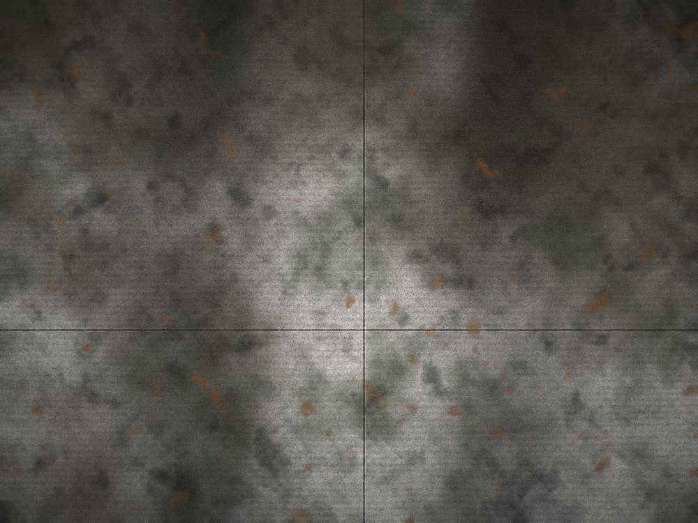
Before AfterHeavy tire tracking and algae along the shaded edge.
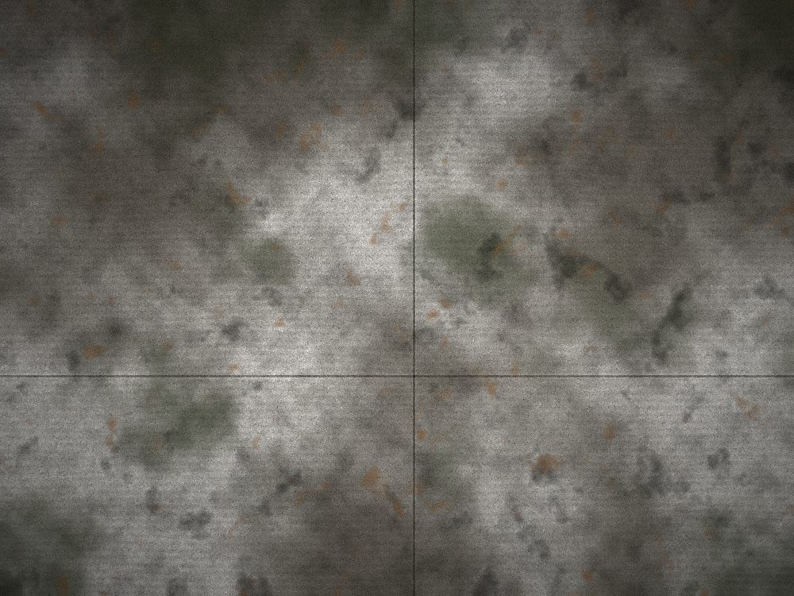
Before AfterNorth-facing slab that had gone almost fully green-black.
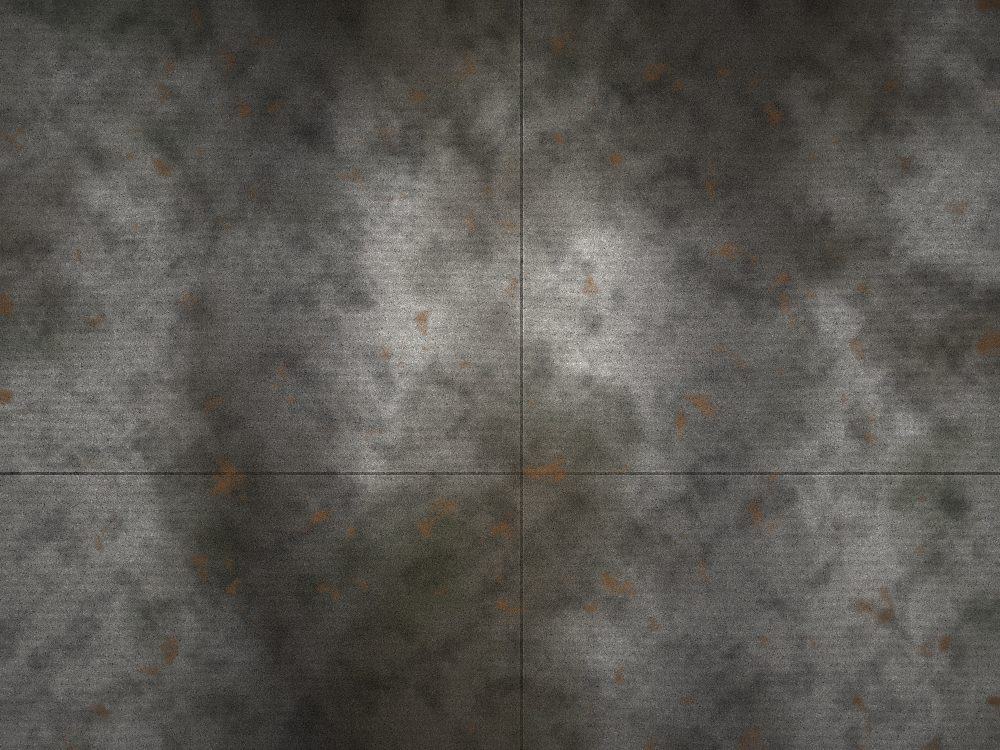
Before AfterApron out to the curb cleaned to match the rest of the slab.
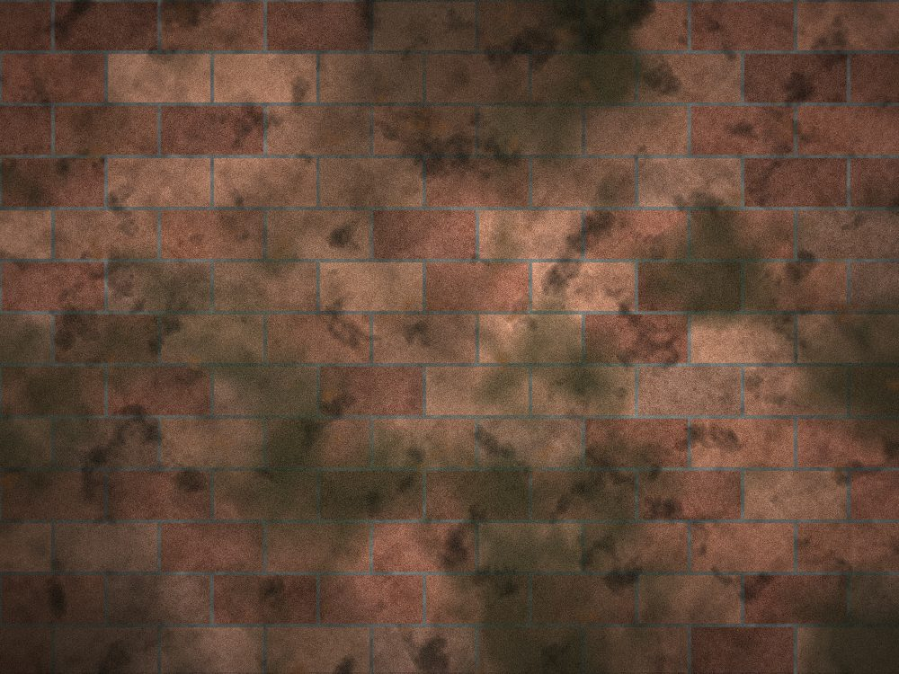
Before AfterMoss out of the joints without disturbing the jointing sand.
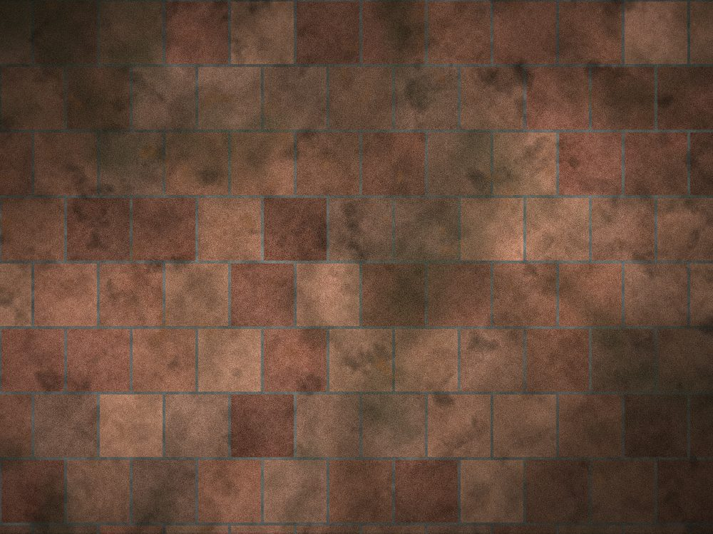
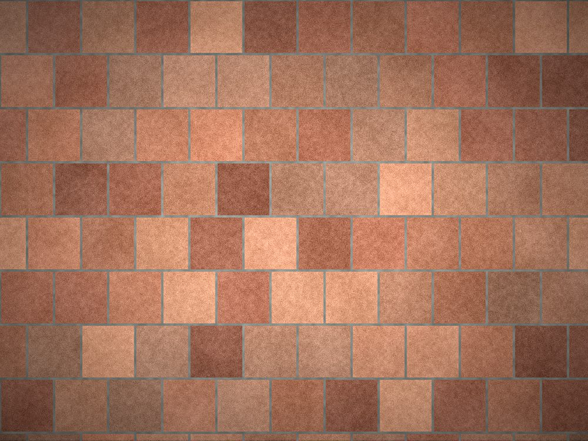
Before AfterFull patio surface, edges detailed by hand.
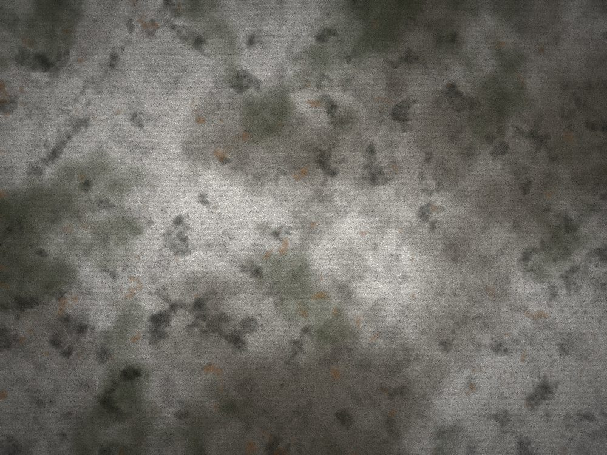
Before AfterLeaf staining and shaded-side film lifted out.
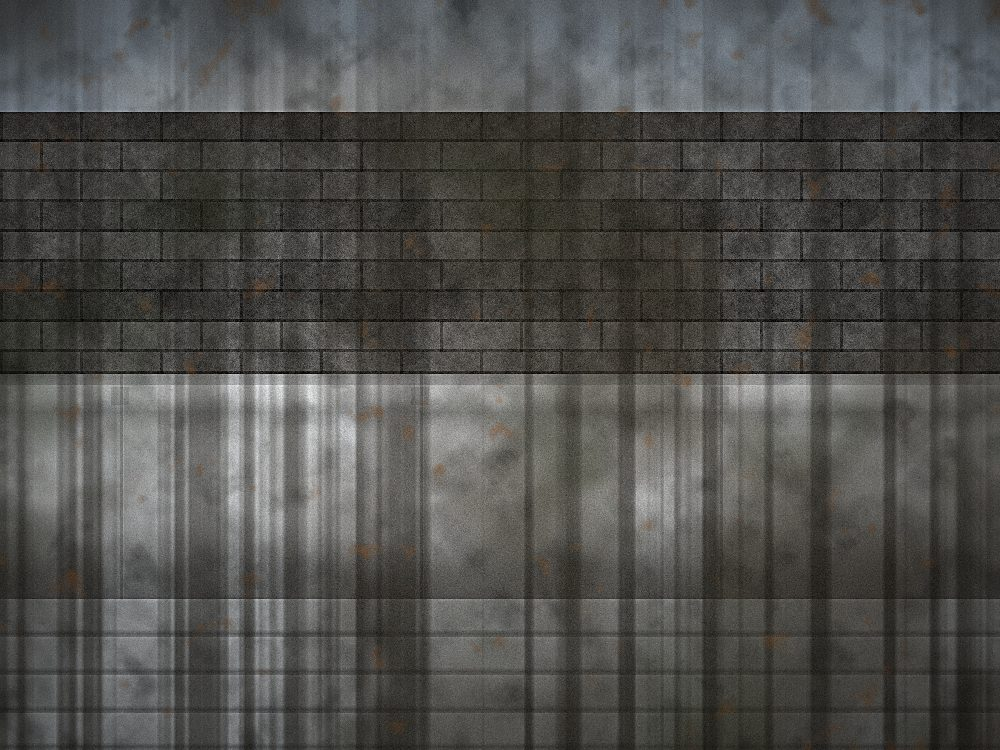
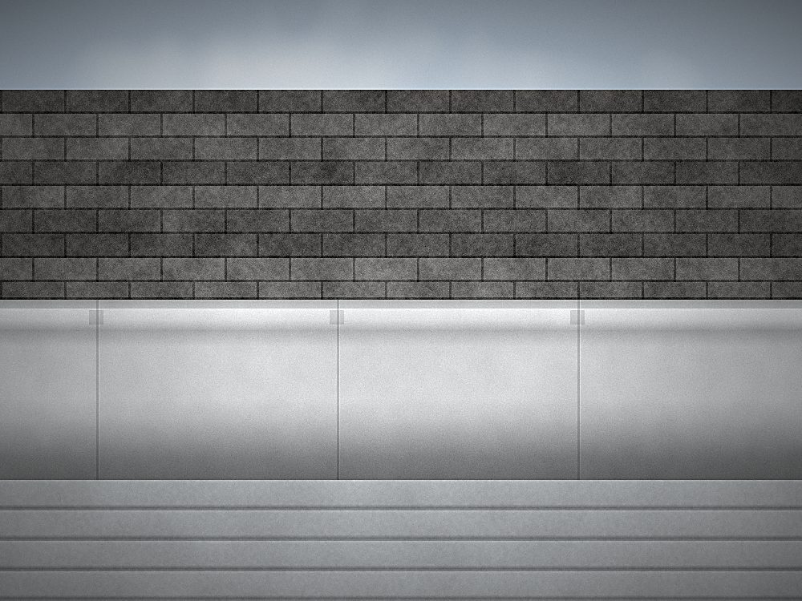
Before AfterOxidation and road film treated and rinsed off the face.
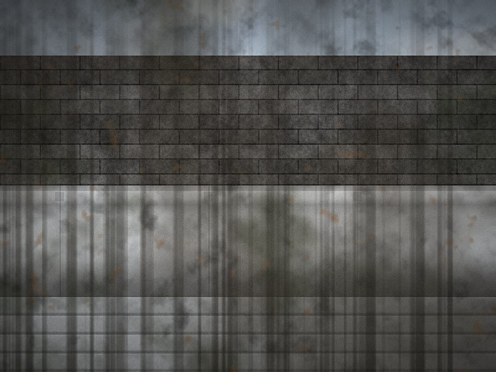
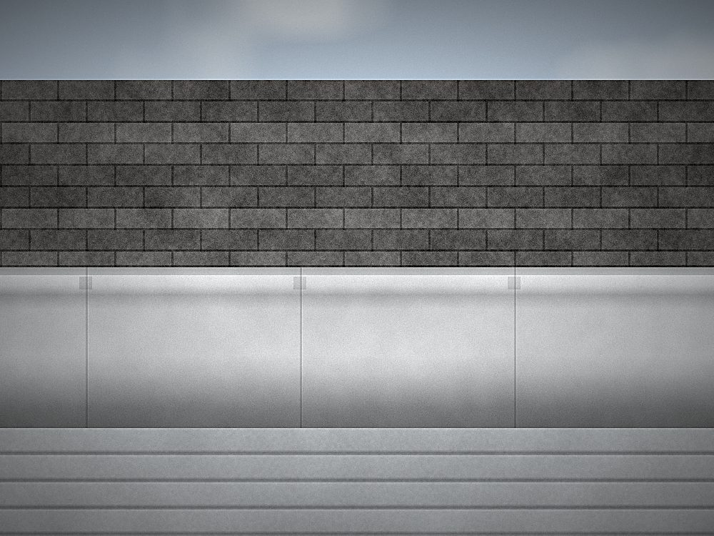
Before AfterTrough cleared and flushed, exterior brightened.
Want your driveway in here?
Free quotes across Southern Indiana. Send a couple of photos and we will get you a firm number — usually the same day.